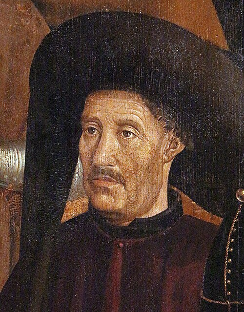

Who Was He?
A Portuguese prince who never sailed on the great voyages himself, yet became the driving force behind the Age of Discovery. He founded a school of navigation at Sagres, sponsored systematic exploration of the African coast, and transformed Portugal into the world's leading maritime power.
Key Achievements:
- Founded a navigation school and observatory at Sagres, gathering cartographers, astronomers, and sailors.
- Sponsored over a dozen expeditions that mapped the West African coastline past Cape Bojador — a barrier sailors had feared to cross.
- Helped Portugal colonise Madeira and the Azoresa, establishing the first Atlantic island colonies.
- Promoted the development of the caravel, a faster and more maneuverable ship suited for ocean exploration.